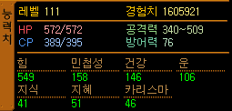
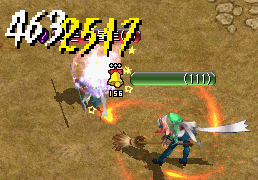
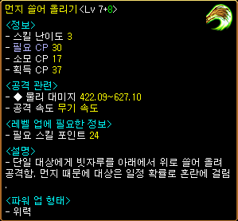
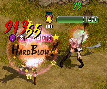
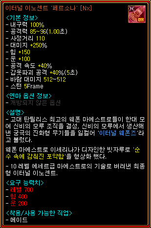
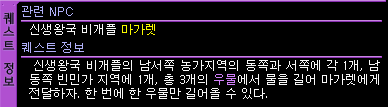
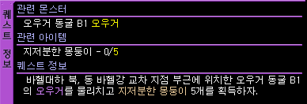
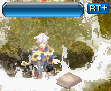

韓国 2013年6月4日アップデート
※韓国公式と韓国人プレイヤーから頂いた情報を基にしています。誤訳や韓国独自仕様の可能性もありますので、予めご了承下さい。2013年6月4日 韓国大型アップデートの変更内容一覧
新キャラクター「メイド」実装
メイド専用装備
メイドのスキルマスタークエスト
復帰者称号
転生者称号
指輪スロット追加
イベント
新キャラクター「メイド」実装
20番目のキャラクターとなるメイドは、普段は温和だけど怒ると怖い！？天然ドジっ娘。
見た目の可愛らしさとは裏腹に、強力な多段攻撃や範囲攻撃を行う物理火力です。
スキル表の詳細は既に出回っているので、ここでは実際のプレイ画像を簡単にご紹介します。
    |
初期グラフィック |
 |
初期ステータス 協会支援あり Lvアップによるステータスの自動上昇はなし。 1Lvにつき5ポイントを自由に振ることができます。 |
|  |
Lv111のステータス 支援なし |
 |
装備は、 インフィニティブルーム1 生誕10周年記念リング 他はレンタルシステムのユニークアイテム。 補助武器は装備できません。 下のスキル検証はこの装備で行っています。 |
 |
インフィニティブルーム1 攻撃力 30~44(1.00秒) 射程距離 110 ダメージ +50％ 運 +50 攻撃速度 +7％ 風ダメージ 55〜55 スタン 5Frame |
 |
生誕10周年記念リング 取引不可アイテム 装備数制限(0/1) すべてのスキルレベル +3 光ダメージ 1〜3000 3秒の間 命中, 回避低下 火の恩寵 持続時間 +30秒 水の恩寵 持続時間 +30秒 風の恩寵 持続時間 +30秒 大地の恩寵 持続時間 +30秒 10周年記念イベントとして、 モンスターを倒した時にドロップする5つの文字を集めてイベントガイドに持っていくともらえます。 RED STONE 生誕3000日記念リングと内容は同じです。 |
 |
初期スキル ブルームスイング （Broom Swing） スキル難易度 1 単体物理攻撃。 |
 |
ホウキで殴る。 黄ダメは インフィニティブルーム1と 生誕10周年記念リングによるものです。 朱洛星シリーズ武器と同様のグラフィックは、 生誕10周年記念リングのものです。 |
 |
ヘビーブルーム （Heavy Broom） スキル難易度 2 単体+範囲物理攻撃。 CP獲得用の基本攻撃スキルとして◎。 SLv50推奨。 |
 |
ホウキで殴って転んで、衝撃で範囲ダメージ。 ターゲット1体には殴る+転ぶの2回分、 周囲の敵には転んだ衝撃の1回分 ダメージを与える。 |
 |
ブルームダスティング （Broom Dusting） スキル難易度 1 単体物理攻撃。 |
|  |
ホウキを振り下ろして殴る。 |
|  |
シューティングダスト （Sweep Up Dust） スキル難易度 3 単体物理攻撃。 混乱確率1％、3秒間。 |
 |
ホウキを下から上に叩き上げる。 |
 |
ダブルスイング （Everywhere Swing） スキル難易度 4 単体物理 2連続攻撃。 |
 |
ホウキを2回振り回す。 |
 |
掃除の邪魔しちゃダメ （Refuse Cleaning Disturbance） スキル難易度 4 単体物理 多段攻撃。 SLvにより最大攻撃回数12回。 SLv50推奨。 パラレルスティングに似た多段攻撃。 |
 |
ホウキの先端で連続して刺す。 |
 |
スローイングディッシュ （Flying Dish） スキル難易度 3 単体+範囲物理 多段攻撃。 |
 |
単体の敵にお皿を投げると… |
 |
お皿が跳ね返って周囲の敵にも複数回攻撃。 |
 |
マッドラッシュ （Naples's Madness） スキル難易度 5 範囲物理 多段攻撃。 最大ターゲット数10匹、最大攻撃回数3回。 SLv50推奨。 ダーティーフィーバーに似た範囲攻撃。 お皿を投げて、周囲の複数の敵に多段攻撃。 タゲを取っている敵にしか攻撃できません。 |
 |
|
 |
|
 |
掃除準備：掃き出す （Ready to Cleaning : Sweep Off） スキル難易度 1 CPチャージスキル。 |
 |
ホウキで掃いてCPを貯める。 |
※これ以降は、Lv111のステータス・装備とは一部変更になっています。 |
|
 |
ブルームアサルト （Broom Charge） スキル難易度 2 直線移動 物理攻撃。 移動狩り用に◎。 SLv1推奨。 ワールランニングに似た移動スキル。 |
 |
突進して、動線上の敵をノックバック。 |
 |
エクストリームブルームラッシュ （Extreme Broom Rush） スキル難易度 3 直線移動+範囲 物理攻撃。 |
 |
突進して、動線上の敵にダメージを与え… |
 |
転んで周囲の敵に範囲ダメージ+麻痺。 |
 |
カオスクリー二ング （Cleaning in Confusion） スキル難易度 3 オートスキル。 回避時、一定確率で2秒間、敵を麻痺させる。 |
 |
麻痺の効果は確認できませんでした。 |
 |
潔癖の乙女 （Rubbish Evasion） スキル難易度 4 習得するだけで効果のある永続スキル。 回避率上昇。 SLv50推奨。 |
 |
パーフェクトクリーニング （From Now On Big Cleaning Time） スキル難易度 5 直線移動+多段 物理攻撃。 |
 |
突進して動線上の敵にダメージを与え、 ターゲット1体にはブロック不可の多段攻撃。 SLv50で攻撃回数3回。 移動速度上昇。 クールタイム3秒。 |
 |
ダストインパクト （Mess Up） スキル難易度 2 単体物理攻撃。 |
 |
ホウキでゴミを掃き上げて、 敵の移動速度低下+ノックバック。 |
 |
ブルームスパイラル （Spinning Broom） スキル難易度 4 範囲物理 持続攻撃。 投げたホウキが回転し続け、 範囲持続ダメージを与える。 クールタイム3秒。 |
 |
|
 |
インサイト （Fastidious Discernment） スキル難易度 3 オートスキル。 ダブルクリティカル時、一定確率でダメージ増加。 1秒ごとにCPを消費。 |
 |
ブルームスイングスキルで検証。 通常時は、 白ダメが約300、ダブクリが約1200。 スキルが発動するとダメージが22％増加して、1420のダメージを与えています。 同時にストリップドレスの効果（火ダメ）も 発動しています。 |
 |
ストリップドレス （Strip Dress） スキル難易度 2 オートスキル。 打撃時、一定確率で火ダメージ追加。 1秒ごとにCPを消費。 レイジソウルに似た火ダメ付加スキル。 |
 |
ブルームスイングスキルで検証。 ストリップドレスなしの場合 白ダメ 約300 黄ダメ 55 （インフィニティブルーム1の風ダメ） |
 |
ストリップドレスが発動した場合 ホウキが黒く光り、 火ダメージ110が追加されています。 ※鎧破壊などの効果はありません。 |
 |
知識45の場合 |
 |
知識109の場合 知識によって火ダメージが増加します。 |
 |
ライフリサイクル （Vitality Recycling） スキル難易度 3 習得するだけで効果のある永続スキル。 最大HP増加。 SLv50推奨。 |
 |
ブルームマスタリー （Broom Mastery） スキル難易度 4 習得するだけで効果のある永続スキル。 打撃時、一定確率で強打。 SLv50推奨。 神撃破に似た強打スキル。 |
|  |
ブルームスイングスキルで検証。 強打が発動するとHARD BLOW！ の表示がでて、ダメージが3倍になります。 通常時の白ダメ 約300が3倍になり、 913の赤ダメージがでています。 ブルームアサルトやブルームスパイラルなど、 全ての物理攻撃時に発動します。 |
 |
セーブマイマスター （Save My Master） スキル難易度 5 オートスキル。 一定確率で1秒間無敵。 最大発動確率40％。 SLv50推奨。 仰け反るに似た無敵回避スキル。 |
 |
鳥が飛び立つエフェクトも仰け反ると同様。 |
 |
ナクリエマの加護 （Nacriema's Blessing） スキル難易度 2 習得するだけで効果のある永続スキル。 運増加。 |
 |
掃除準備：拭き取る （Ready to Cleaning : Mop） スキル難易度 2 CPチャージスキル。 攻撃力（SLvによる）、移動速度15％上昇。 |
 |
モップをかけてCPを貯める。 |
 |
掃除準備：殺菌消毒 （Ready to Cleaning : Sterilization and Disinfection） スキル難易度 4 CPチャージスキル。 10秒間、 攻撃力10％、防御力+2、集中力10％増加。 |
 |
殺菌消毒してCPを貯める。 |
 |
メイドオブメイド （Housekeeper's Dignity） スキル難易度 5 習得するだけで効果のある永続スキル。 集中力増加。 ※スキルの消費CP減少効果はありません。 |
<育成例>
掃除準備：掃き出す （CPチャージ） SLv1
↓
ブルームアサルト （ワール似 移動） SLv1
↓
ヘビーブルーム （殴って転んで範囲攻撃） SLv50
↓
潔癖の乙女 （回避永続） SLv1
ストリップドレス （火ダメ付加オート） SLv1
ライフリサイクル （HP増加永続） SLv1
ブルームマスタリー （神撃破似 強打永続） SLv1
セーブマイマスター （仰け反る似 無敵回避オート） SLv1
↓
掃除の邪魔しちゃダメ （パラ似 単体多段攻撃） SLv50
↓
マッドラッシュ （DF似 範囲多段攻撃） SLv50
↓
掃除準備：殺菌消毒 （CPチャージ） SLv50
↓
潔癖の乙女 （回避永続） SLv50
ストリップドレス （火ダメ付加オート） SLv50
ライフリサイクル （HP増加永続） SLv50
ブルームマスタリー （神撃破似 強打永続） SLv50
セーブマイマスター （仰け反る似 無敵回避オート） SLv50
↓
↓以降はお好みで…
↓
パーフェクトクリーニング （貫通多段攻撃）
ブルームスパイラル （範囲持続ダメージ）
インサイト （ダブクリダメ増加オート）
ナクリエマの加護 （運増加永続）
メイド専用装備
メイドの実装に伴い、ノーマル・ユニーク・インフィニティ武器・セットアイテム・Rank-EXが追加されました。
 |
古都ブルンネンシュティグ（84.164）に メイド用のノーマル武器販売NPCが追加。 |
 |
ノーマル武器6種が販売されています。 |
 |
冒険家協会ブルンネンシュティグ本部 装備商人（36.22）にて、 ノーマル武器4種とレア武器3種が販売されています。 |
 |
古都ブルンネンシュティグ 武器職人サナ（98.53）より、インフィニティブルーム1を神秘石4個で購入できます。 3月に実装された光奏師インフィニティ武器は、 インフィニティコード（物理用） インフィニティバイブル（知識用）の2種類があります。 |
 |
武器職人サナ（98.53）にて インフィニティブルームの一覧を見ることが出来ます。 インフィニティブルームのみNxも見学できます。 |
|  |
インフィニティブルーム'ペルソナ'[Nx] 攻撃力 85~96(1.00秒) 射程距離 110 ダメージ +250％ 力 +150 運 +100 攻撃速度 +40％ 鎧破壊攻撃 +40％(5秒) 風ダメージ 512〜512 スタン 5Frame |
 |
Lv330セットアイテム。 |
メイドのスキルマスタークエスト
 |
新興王国ビガプールのNPC（161.48）より、クエストを受諾します。 |
|  |
新興王国ビガプールの井戸をクリックしてNPCに戻る、を3回繰り返します。 井戸（14.136）（49.154）（115.165） 順不同 |
|  |
オーガの巣窟 Ｂ１のオーガ（Lv65）を倒して、クエストアイテム5つを集めます。 NPCに戻って終了。 |
 |
メイドのスキルマスター称号 「掃除術」を獲得。 経験値25万。 メイド育成キャンペーンとして、リフレクティング・シャードも貰えます。 |
復帰者称号
|  |
30日以上ログインしていないキャラクターがログインすると、復帰者称号を獲得し、名前の横にRT+が表示されます。 復帰者称号は、復帰後7日間のみ有効。 その後、自動的に消滅します。 |
 |
復帰者（Lv1） パーティー経験値ボーナス 10％ 個人経験値ボーナス 20％ 称号欄を右クリックして使用すると、パーティーメンバー全員に協会支援と同様の効果が得られます。 |
転生者称号
転生すると、自動的に転生者称号が与えられるようになりました。
既存のキャラクターは、古都ブルンネンシュティグ クレメンタイン（72.60）に話すことで転生者称号を獲得できます。
 |
転生者（Lv1） 個人経験値 10％ （Lv1〜600のみ） パーティー経験値 10％ （Lv601〜も有効） 転生者用 指輪スロット 1個 |
| 転生回数 | 転生者称号 | 個人経験値 | パーティー経験値 | 指輪スロット |
|---|---|---|---|---|
| 1次 | Lv1 | 10％ | 10％ | +1 |
| 2次 | Lv2 | 15％ | ||
| 3次 | Lv3 | 20％ | +2 |
ただしLv601以上になると、個人経験値ボーナスはなくなり、パーティー経験値10％のみ有効となります。
指輪スロット追加
転生者称号を獲得すると、指輪スロットが拡張されます。
クロネの指輪に限らず、全ての種類の指輪を装備することができます。

イベント
10周年とメイド実装を記念したイベントが多数開催されています。
 |
ユニークアイテムレンタルイベント 6月4日〜7月17日の間、 古都ブルンネンシュティグのイベントNPCより、 ユニークアイテムを500Gで24時間レンタルできます。 |
 |
レンタル可能なユニークアイテム。 |
 |
通常のユニークアイテムよりも要求Lvが低くなっています。 |
 |
風船イベント 古都ブルンネンシュティグのイベントNPCより、 風船を2万1500Gで購入できます。 |
 |
風船の色により、 経験値やアイテムドロップ率上昇などの効果があります。 |
メイド作成キャンペーン
6月4日〜7月16日の間、メイドを作成してLv10まで育てると抽選で商品券などのアイテムが当ります。
メイド育成キャンペーン
6月4日〜7月17日の間、メイドを作成してスキルマスタークエストを完了すると、もれなくリフレクティング・シャードと、抽選で奇妙な壷をプレゼント。
出席チェックイベント
生誕10周年記念リングを装備して毎日出席チェックを受けると、各職のセットアイテム（メイドは除く）が支給され、ステータス・スキルを初期化して再振りすることができます。
決戦ワールドは日韓戦に向けた準備の為、現在一時的に閉鎖されています。
また今回のアップデートで実装されなかった、モンスター召喚アイテム、転生者専用の装備、スキル・ステータスポイントの転生ボーナス上方修正は、次回6月下旬のアップデートで実装予定です。